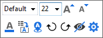

FAQ-134 Wie zeige ich die Datenwerte auf meinem Balken- und Säulendiagramm?
Show-Data-Values-on-Bar
Letztes Update: 17.02.2020
Mit Minisymbolleiste
- Klicken Sie auf die Zeichnung und dann auf die Schaltfläche Datenbeschriftungen zeigen auf der Minisymbolleiste.
- Klicken Sie auf die Beschriftungen. Sie können das Beschriftungsformat und die Beschriftung dann mit der Minisymbolleiste für Beschriftungen benutzerdefiniert anpassen.

Mit Dialog Details Zeichnung
- Klicken Sie doppelt auf die Balken bzw. Säulen in Ihrem Diagramm, und der Dialog Details Zeichnung wird geöffnet.
- Wechseln Sie zur Registerkarte Beschriftung und aktivieren Sie das Kontrollkästchen Aktivieren.
- Wählen Sie eine Option in der Auswahlliste Beschriftungsformat.
Schlüsselwörter:Beschriftung, Y-Werte